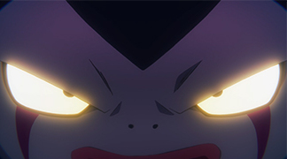
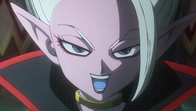
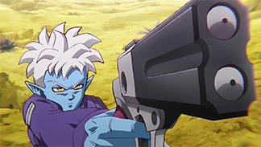
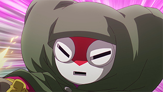

Meet some of the new characters!

Gomah
A demon from Demon Realm. He becomes new King of the Demon Realm after learning of Dabura's death.

Dr. Arinsu
A scientist who reigned in the Demon Realm as one of the Demon Supreme Kais. She was the sister of the Supreme Kai Shin and the Demon Supreme Kai Degesu

Glorio
A demon gunman from Demon Realm who accompanies Goku and Shin on their journey.

Masked Majin
A mysterious ally who will be revealed in due time. Can anyone with a mask like this really be trusted in the Demon Realm?